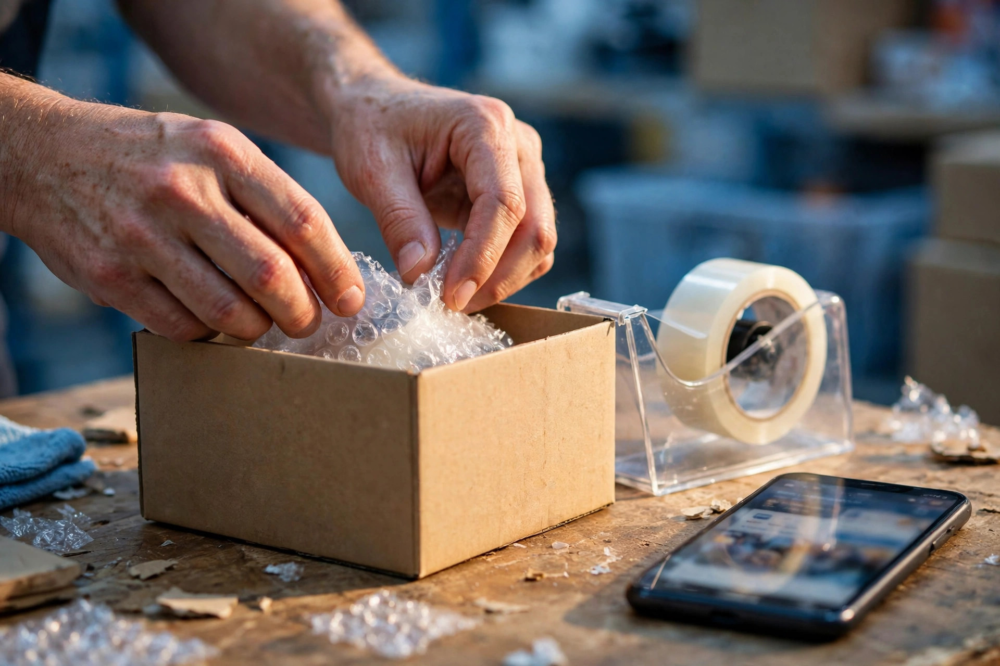

Not long ago, buying something unfamiliar in Pakistan meant visiting the bazaar, asking around and comparing shops in person. That still happens, and for many products it always will. But alongside it, a second habit has grown quietly: people now check online first. They search for the product, compare descriptions, look at photos, read what other buyers say, and only then decide where their money goes.
You do not need statistics to see it. Ask any shopkeeper whose customers arrive already knowing the product name and the going price from their phones. The conversation has changed, and sellers who understand the change sell differently from those who do not.
Search Comes Before the Purchase
The most important shift for sellers is that the shopping journey now starts with a search, even when it ends in a physical shop. A customer who searches, finds your product page, and walks in convinced is a different customer from one who must be persuaded from zero. SEO is what places your products in that first search moment.
This applies to local sellers as much as national ones. Someone searching for a product near them sees local results too, which is why a seller with a physical shop benefits from the work described in local SEO and Google Business Profile optimisation: an accurate profile, real photos and clear product and service information.

Trust Is the Real Currency
Online shoppers in Pakistan have learned to be careful. Everyone knows someone who ordered one thing and received another. Because of that experience, shoppers look for signs of a real, accountable seller: a working phone number, a physical address, consistent details, honest photos rather than copied catalogue pictures, and reviews that sound like real people.
Sellers sometimes treat these details as decoration. They are not. They are the answer to the shopper's main question, which is not really about the product at all. It is: can I trust you with my money before I see the goods?
Product Pages That Actually Sell
Many product pages online are little more than a copied supplier description and a price. Those pages fail in search and fail with shoppers, because they answer nothing. A good product page, written by the seller, covers:
- What the product is, in the words shoppers use, including common Roman Urdu phrasing where natural.
- Sizes, materials, colours and variations stated clearly, with honest photos of the actual item.
- Delivery areas, delivery method and how returns or exchanges are handled.
- Questions buyers of this product usually ask, answered briefly on the page.
Each of those points is also SEO. Search engines reward pages that fully answer the searcher's need, and shoppers reward them with orders.

Marketplaces, Social Selling and Your Own Store
Sellers today juggle marketplaces, social media pages and sometimes their own website. Each channel plays a different role. Marketplaces bring traffic you did not have to earn. Social pages build a following and handle conversation. Your own store is the one asset you fully control, where search visibility you build stays yours. The comparison in Daraz or your own online store works through this choice, and starting an online business in Pakistan covers the wider setup for new sellers.
What This Means in Practice
For a seller, the practical lesson of changing shopping habits is not to abandon the shop or the bazaar. It is to make sure the online version of your business is as trustworthy and informative as the real one. Keep product information accurate. Answer messages promptly. Describe delivery honestly. Collect genuine reviews and learn from the complaints in them. These habits serve the customer in front of a screen exactly as good shopkeeping serves the customer in front of the counter.
A Change That Rewards Good Sellers
Online shopping growth is sometimes presented as a threat to traditional sellers. Seen clearly, it is closer to a filter: it rewards sellers who describe honestly, deliver reliably and communicate well, and it exposes those who do not. SEO, at its best, is simply how a good seller gets found by the growing number of customers who start their shopping with a search.
Delivery and Communication Shape Reputation
One part of online shopping that sellers underestimate is how much of their reputation is written after the order. A parcel that arrives when promised, a message answered politely when a delivery is delayed, and an exchange handled without argument all become the stories customers repeat in reviews and in person. Those reviews then appear beside the seller's name in search, influencing the next shopper before a single product page is opened. In this way delivery vans, riders and message replies have quietly become part of SEO, because the trust they create is exactly what search results display.
Frequently Asked Questions
Do Pakistani shoppers still prefer buying in person?
Many do for some things, and habits vary by product and family. What has changed is that even in-person purchases often start with an online search, a price check or a look at reviews, so being visible online matters even for shops that sell face to face.
What do online shoppers in Pakistan worry about most?
Trust: whether the product will match the pictures, whether delivery will arrive as promised, and whether returns are handled fairly. Clear product pages, honest photos and visible contact details answer much of that worry.
Should a seller use a marketplace or their own store?
Both have roles. Marketplaces bring ready traffic but charge fees and limit your control. Your own store builds a lasting asset you control. Our article comparing Daraz with your own online store discusses the choice in detail.
What SEO matters most for an online seller?
Clear product pages with honest titles, descriptions and photos, correct stock and price information, fast mobile pages, and helpful content answering the questions shoppers ask before buying.
Want More Customers From Google?
Call 0327 7350830 or email seozaheer14@gmail.com. Zaheer Seo Expert, Layyah - Rajan Shah Road, Rana Nagar, Chak 116 TDA, Pakistan. Open 24 hours.
Get Your SEO Strategy →